Massage + Facial, Paddington
Where body, face and mind become one.
Located in the heart of Paddington, MIEKO offers a unique, holistic approach to beauty and wellness. Specialising in Advanced lymphatic drainage and facial sculpting with buccal massage, MIEKO combines 10 years of Japanese-inspired techniques to deliver results that go beyond the ordinary.
Release, Relax, Unwind
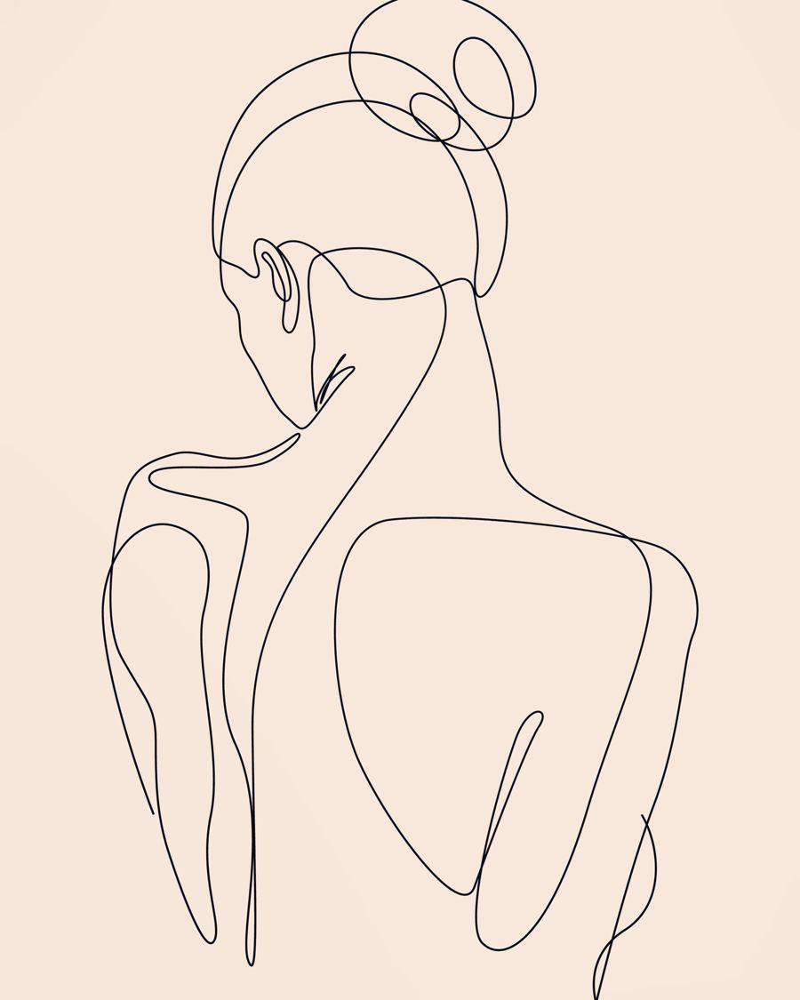
- Facial Sculpting
- Buccal Massage
- Advanced Lymphatic Drainage
- Remedial Therapy
- Sliding Cupping
- Japanese Head Spa
Our services
What would you like to release today?
一期一会Discover the unique art of rejuvenation at MIEKO, where each massage and facial is a once-in-a-lifetime experience inspired by the Japanese philosophy of ichigo ichie. Our treatments are carefully tailored to meet your individual needs, ensuring a memorable and revitalizing visit every time. Embrace a moment just for you, at MIEKO.
Remedial Massage / Deep TissuePain, Posture, Function, Recovery60 min$15590 min$195
Specializing in a unique approach to treating both chronic and acute muscle pain and discomfort. Through my remedial massage therapy, I aim to provide a balance of pain relief, deep relaxation, and increased awareness of your body's abilities. To achieve this, I use a range of techniques, including deep tissue massage, trigger point therapy, and myofascial release.
Go to the booking pageSignature Massage (Body + Facial)Total body and face90 min$220with Buccal$225
Experience ultimate luxury with our Signature 90-Minute Massage, a blend of a customised body massage and a rejuvenating facial. Choose from remedial, deep tissue, or lymphatic detox massages and facial sculpting massage to address your specific needs. This popular treatment will leave you feeling completely renewed, with radiant skin and total body relaxation. *Additional cost applies If you'd like to change facial massage to buccal massage.
Go to the booking pageFacial SculptingFacial lift, define, release facial muscles60 min$165
Routine habits cause facial muscles and fascia to become stiff and immobile, causing a virtuous cycle. This procedure is a special remedial technique that improves TMJ problems, headaches, tired eyes, swelling and sagging, detox, and anti-aging by adjusting the unbalanced muscles, fascia, lymph and blood circulation.
Guasha/ Facial Acupuncture pen/ Ozone steamer
will be added depending on the treatment content.
Go to the booking pageBuccal MassageDeep jaw & intra-oral tension release60 min$175
Step into the new era of wellness with our revolutionary Buccal Massage. Combining holistic inner-mouth techniques with the precision of remedial methods, it's a game-changer for TMJ problems, anti-aging concerns, facial lymphatic drainage, and tension in facial muscles. Our approach seamlessly blends the best of holistic and medical practices, offering a comprehensive solution for your well-being needs.
Go to the booking pageLymphatic Drainage (Manual + Detox)Fluid retention + detox60 min$16590 min$205
Using specific techniques, my massages stimulate both the deep and superficial lymphatic systems to promote detoxification and healing processes. This has numerous benefits such as boosting the immune system, promoting healthy bowel and bladder movements, balancing hormones, and removing metabolic waste such as excess fluid, bacteria, toxins, and even cellulite.
Go to the booking pageRemedial Massage + (Sliding Cupping)Remedial Plus60 min$165
Experience the ultimate relief with our unique combination of remedial massage and sliding cupping. This innovative treatment targets muscles, fascia, and adhesions, promoting enhanced blood circulation. Discover a new level of relaxation and rejuvenation as we help you release tension and improve your overall well.
Go to the booking pagePregnancy MassagePregnancy from 12 weeks60 min$155
Experience the soothing benefits of pregnancy massage therapy, designed specifically for expectant mothers. Our certified therapists focus on relieving discomfort, easing pressure, and enhancing blood circulation. Enjoy a more restful sleep and as you prepare for the beautiful journey of motherhood. Indulge in this nurturing experience and feel the it can make during your pregnancy.
Go to the booking pageJapanese Head SpaScalp + nervous system reset60 min$155Head spa and massage, 90 min$225
A Japanese head spa is a luxurious, holistic scalp and hair treatment focusing on deep cleansing, exfoliation, and therapeutic massage to improve scalp health, relieve stress, and promote healthy hair growth, acting like a "facial for the scalp" with steam, specialized products, and relaxing techniques for a rejuvenating experience. It goes beyond a regular wash by addressing scalp issues like oiliness, buildup, and tension through a multi-step ritual involving diagnosis, scrubbing, nourishing masks, and massage.
Go to the booking pageDry Head / Scalp SpaTired eye, headache, nervous system50 min$145
Softens the muscles and fascia of the scalp, drains waste products, and removes adhesions of the skull muscles. It improves the quality of sleep and leads to the highest level of relaxation. Improves scalp aging care, facial anti-aging, eyestrain, brain fatigue, head stiffness and stiff shoulders.
Go to the booking pageAbdominal Organ MassageGut + emotional tension release50 min$145
A deeply nurturing treatment focused on your body’s core: the abdomen.
We gently stimulate internal organs to support digestion, hormone balance, and detox.
Tension, bloating, and emotional holding patterns are released from within.
Inspired by Japanese and Eastern healing wisdom, it reconnects gut and mind.
Feel lighter, clearer, and grounded from your center.
Go to the booking pageGeisha FacialSkin + Japanese facial75 min$210
Indulge in our signature Geisha Facial, exclusively at MIEKO, using luxurious Japanese organic products rooted in ancient beauty rituals. This treatment includes deep exfoliation with two natural scrubs, gentle steam, a revitalising facial massage, and our hero: a warm sake facial pack that melts into your skin at a cellular level. Designed to deeply hydrate, brighten, and restore your glow — the timeless way.
Go to the booking pageRelaxation MassagePressure + mobility restorationNo health fund claimable60 min$13590 min$175
Introducing our Shiatsu relaxation massage, a unique fusion of traditional Japanese shiatsu techniques and swedish massage fusion. This specialized therapy is designed to release tension, improve flexibility, and restore balance throughout the body—all while fully clothed. Rooted in authentic Zen principles, each session provides a serene, calming atmosphere, allowing you to experience the tranquility of Japan right here. If you love shiatsu, you’re going to fall in love with this deeply relaxing and rejuvenating experience.
Go to the booking pageLED Light (Clinical Grade)Combination with any other service20 min$35
Enhance your massage with Celluma LED Light Therapy — a clinical-grade, NASA-developed light treatment that reduces inflammation, boosts collagen, clears acne, and relieves muscle or joint pain. This gentle, non-invasive therapy is the perfect add-on to deepen relaxation and support skin and tissue healing. Available before or after your massage.
Go to the booking pageNaturopath Online ConsultationOnline, on MondaysOnlineMondays
Naturopath consultations are designed to address the root causes of health concerns through natural therapies and holistic care. From stress and detoxification to hormonal balance and general wellness, our naturopaths work with you to create a tailored plan for long-term vitality.
Go to the booking page
HICAPS
We offer HICAPS for Health Fund claim with registered therapists. All Health Funds are available for rebate claim.
Payment options
Cash, Debit and Credit Card: Visa, Mastercard and American Express. Card fee apply.
Buccal massage · Japanese facial sculpting in Sydney
From the inside out.
Experience the natural alternative to cosmetic injectables. Located in the heart of Paddington, MIEKO offers specialized Buccal Massage (intra-oral facial massage)—an advanced technique designed to naturally lift, contour, and melt away deep-seated facial tension from the inside out.
What is Buccal Massage?
Buccal massage is a sophisticated, non-invasive facial therapy where muscles are gently worked both externally and internally (from inside the mouth).
By safely accessing the deeper layers of the chewing muscles and ligaments, this technique targets areas that traditional facials simply cannot reach. At MIEKO, our highly trained therapists use strict hygienic protocols (always utilizing sterile gloves) to deliver a treatment that balances deep therapeutic relief with a youthful, radiant lift.
The benefits of MIEKO’s buccal therapy
- Natural Facelift & ContouringInstantly tones and sculpts the cheekbones and jawline, reducing puffiness and defining facial structure.
- TMJ & Jaw Tension ReliefPerfect for those who clench their teeth, grind their jaws, or suffer from stress-related facial fatigue.
- Enhanced Lymphatic DrainageStimulates fluid circulation to clear stagnation, leaving your skin glowing and deeply rejuvenated.
- Holistic Japanese WellnessBlended with our traditional philosophy of care, treating both your physical anatomy and nervous system.
Q & A
First visit guide.
What makes MIEKO different from a traditional massage or facial?
At MIEKO, we go beyond surface-level relaxation. With over 10 years of expertise, we specialise in advanced techniques such as Facial Sculpting, Buccal (Intra-oral) Massage, and Deep Lymphatic Drainage. Our approach focuses on the deep musculature and lymphatic system to provide lasting structural results and a profound sense of well-being that you won't find at a standard spa.
What is Buccal Massage, and does it hurt?
Buccal massage is a unique technique where the muscles are massaged from inside the mouth. It is the most effective way to release tension in the jaw and lift the lower face. It is not painful; most clients describe it as a "deep, satisfying release." For your safety and hygiene, we always use medical-grade sterile gloves during this procedure.
Can I see results in just one session?
Yes! Most clients notice a visible "lift" in their facial contours and a significant reduction in puffiness (lymphatic stagnation) after their first visit. For long-term facial sculpting and detoxification, we recommend a series of sessions, which we can discuss during your consultation.
Which treatment should I choose if I’m not sure what I need?
We recommend booking our "Signature Sculpting Facial" or "Remedial Massage." Upon your arrival, Mieko will conduct a brief consultation to assess your needs—whether it’s stress relief, facial lifting, or detox—and tailor the treatment specifically for you on the day.
Do I need to prepare anything before my appointment?
No special preparation is needed. We provide all necessary towels and wraps. If you are having a facial, we will perform a professional cleanse, so it is perfectly fine to arrive with makeup on. We simply recommend drinking plenty of water after your treatment to assist with the lymphatic detox.
Philosophy · Why choose MIEKO
Authentic Japanese wellness in the heart of the city.
At MIEKO, we believe Japanese therapy is more than just massage.
It is about balance, care, and a genuine connection with the body and mind.
Our concept is Japanese wellness through thoughtful experiences, inspired by authentic Japanese techniques, philosophy, and hospitality.
- 01
Authentic Japanese Techniques & Philosophy
Our treatments are inspired by traditional Japanese bodywork such as Shiatsu and holistic wellness practices. We focus on restoring balance, releasing deep tension, and supporting both physical and mental wellbeing.
- 02
Luxury Japanese Experience
At MIEKO, we create an environment that reflects the beauty and calm of Japan.
Many of the details in our space — Japanese pottery, paintings, and small objects — are personally selected by MIEKO during visits to Japan.
Clients can also experience elements of Japanese culture, such as wearing yukata or kimono, making each visit a unique cultural and wellness experience.
- 03
Personalised Care
Every body is different. Our team carefully listens and observes, tailoring each treatment to the client’s condition, lifestyle, and needs.
- 04
Inspired by the Spirit of Zen
The philosophy of MIEKO is deeply influenced by the calm and simplicity found in Zen temples. Our intention is to create a peaceful place in the city where people can release stress, cleanse their mind, and restore their energy.
- 05
A Welcoming Place for Everyday Renewal
MIEKO is proud to be an open and welcoming place where people can come at any time to relax, recharge, and take care of themselves.
- 06
The Meaning Behind MIEKO
The name MIEKO is inspired by “Miko,” a woman who serves at a Japanese shrine.
By placing the letter “E” from Emiko at the center, the name reflects a personal connection and a wish to bring the spirit of care, purity, and dedication into this space.
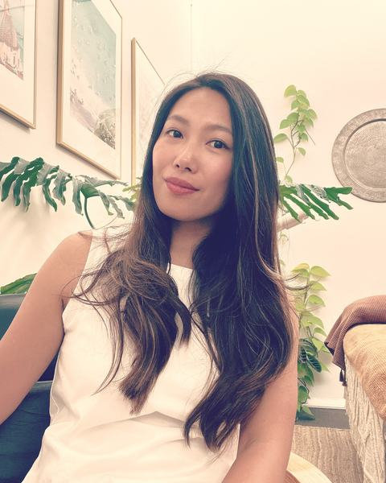
Mindful philosophy
Founder / Therapist Emiko Terui
- Remedial massage Diploma
- Oncology massage (lymphatic drainage)
- Personal trainer certificate III and IV
I was born 1982 in the centre of Tokyo, I grew up in big family with my grandmother, who taught me fundamental Buddhism. My first dream was become a teacher of Japanese calligraphy, when I became a teens, suddenly I fell in love with music and flamenco dancing so at the age of 21 headed to Spain Sevilla alone.
I came to Australia at the age of 27, repeating encounters and farewells with people in various countries. I was reassured by the life in the mother land and sea, I was inspired to be as a massage therapist that gave me a sense of life.
During the 6 years at MO +, which was the foundation of my career.
MIEKO which I want to devote my life to the pain and illness of each and every customer also show my irreplaceable daughter that my own life will grow by sharing my experiences with people.
MIEKO was founded to help you on your journey to listen and release your mind and body.
“Not about being No.1. About becoming ONE”
Our team
Skilled hands, soothing touch.
Welcome to MIEKO, where skilled hands and soothing touch come together to rejuvenate your mind, body, and spirit. Meet our dedicated massage and facial therapists. committed to providing personalised care and relaxation tailored just for you.
Emiko Terui (Founder)Massage therapist / Facialist
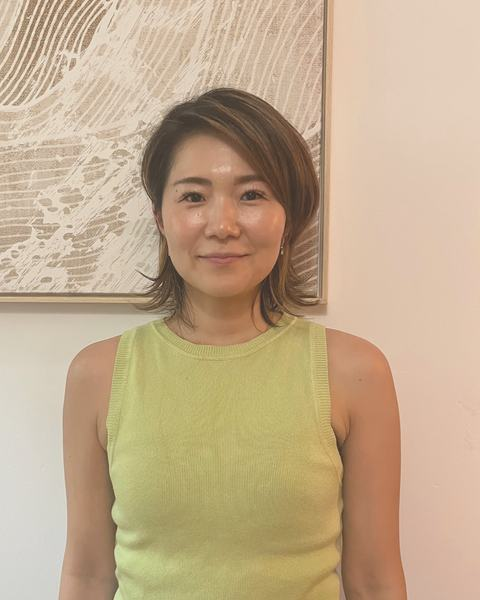
Hitomi MuramatsuMassage Therapist / Buccalist
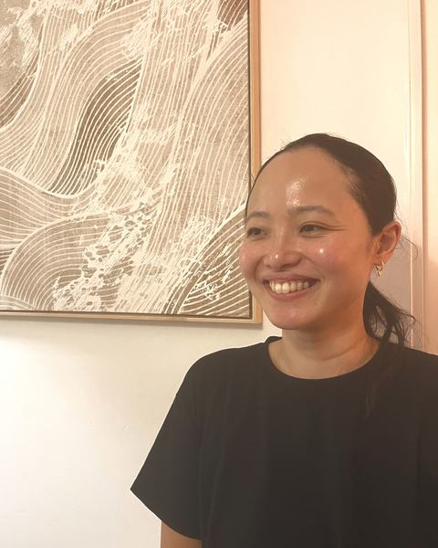
Tomoko KankakuMassage Therapist / Facialist
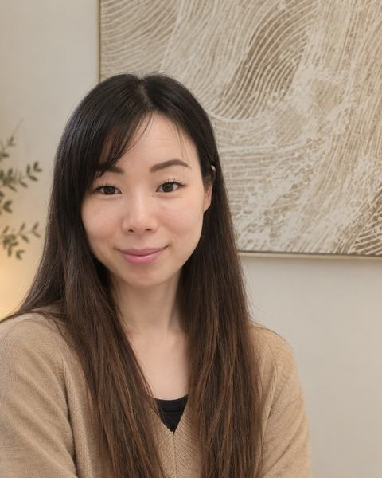
Chiharu NagataMassage Therapist / Cupping +
Ako PalethorpeMassage Therapist / Beauty
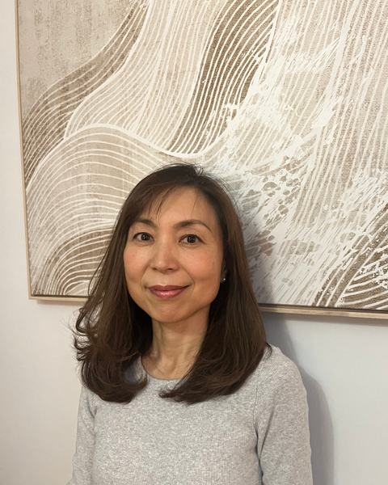
ChinamiNaturopath
We are looking for beautiful practitioners to join our team! Please contact us for more info.
Testimonials
In their words.
She is always incredibly professional and friendly. I've been seeing her many years now every weekly.
I get usually remedial massage which the best massage ever!
The clinic itself is very clean and so beautifully decorated. It makes you feel relaxed the moment you step in!
Ina Filep
When you have a massage with Emiko you enter into an immaculate warm space to relax in her capable care.
She has excellent knowledge of physiology to help with specific problems.
Emiko is kind, warm hearted therapist, you will be in good hands!
Jann Martin
Emiko is just amazing!!
I have been in many therapists but she understood my problems as soon as she touched my back!
As chef we have a lot of neck and low back issues and after her therapy I felt much better.
Aniello BortoneThe owner of Semola italian restaurante
In the press
- Body+Soul · September 22 2019Beauty Gets MindfulBy Kelsey Ferencak, Body+Soul Beauty Editor
Do you know GUASHA? This tool I have been using for more than 6 years! The whole new self-care time for restore your mind and skin.
Read full article - Body+Soul · March 13 2020A beginners guide to giving yourself an instant facelift with your fingertipsBy Kelsey Ferencak, Body+Soul Beauty Editor
Do you want to workout for face? Yes, really. This facial yoga poses for your face yoga journey!
Read full article - Body+Soul TV · Feb 25 2022A step-by-step guide to facial yoga
Let’s get started! Best 5 facial yoga exercise for new self-beauty care!
Watch now
Gift vouchers and products
To give, and to take home.
Enjoy the convenience of our digital gift vouchers delivered straight to your email.
Gift vouchers
Gift Voucher (Lymphatic detox massage 1 hour)
$165
Ask to orderGift Voucher (Facial Sculpting 60min)
$165
Ask to order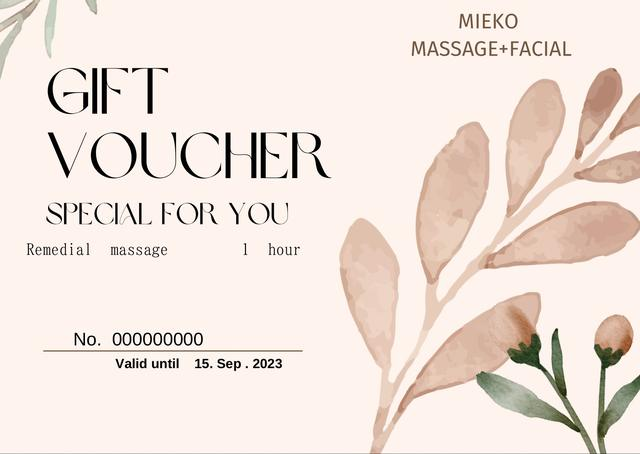
Gift Voucher (Remedial Massage 1hour)
$155
Ask to orderGift Voucher (MIEKO SPECIAL Body + Facial 90min)
$220
Ask to order
Products
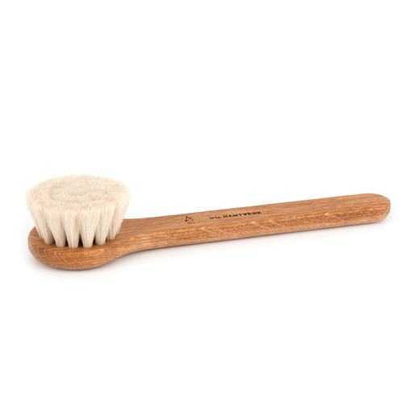
Facial Dry Brush (Iris Hantverk)
$20
Ask to order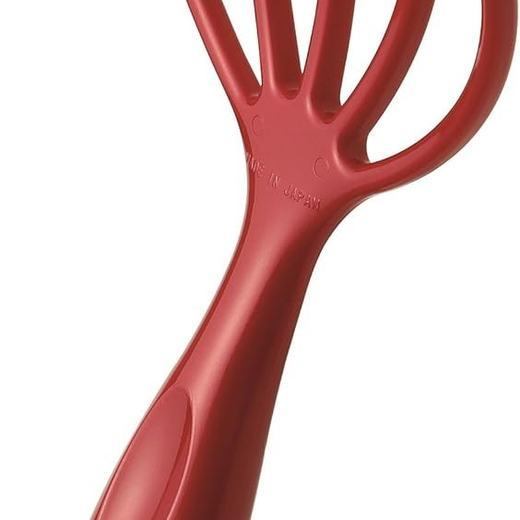
Mantensha Head Spa Hand Pro (Head Line Far Infrared Type)
$30
Ask to orderFacial Guasha
$23
Ask to orderKOMENUKA RICE BRAN EXFOLIANT (100% PREMIUM)
$59
Ask to orderPURE SILK body mitten
$20
Ask to orderPURE SILK facial mitten
$15
Ask to order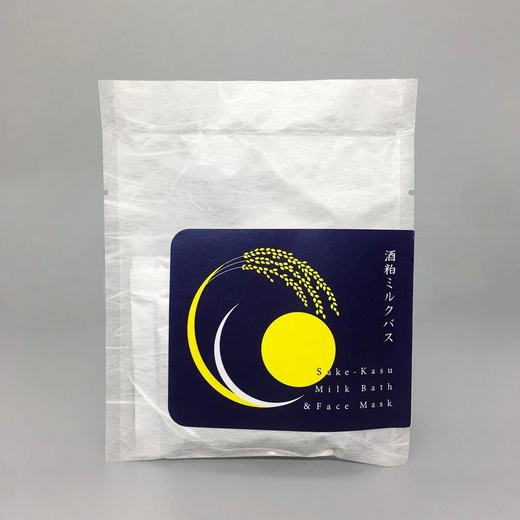
SAKE-KASU milk bath + brightning face mask
$18
Ask to order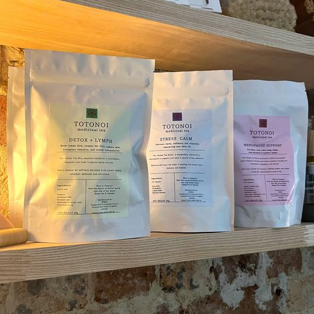
Totonoi Medicinal Tea
$16
Ask to order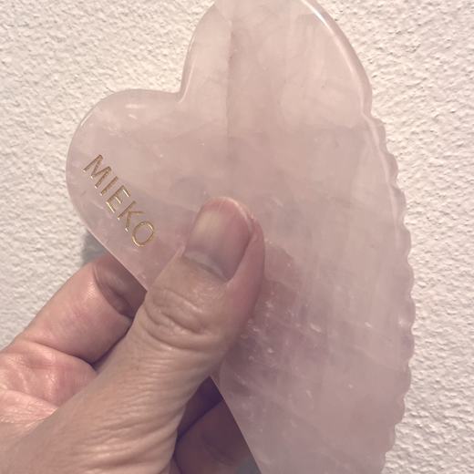
MIEKO GUASHA (Body+Facial)
$56
Ask to order
About each product
The text below is the original wording of the current website.
Facial Dry Brush (Iris Hantverk)
Facial Dry Brush ( Iris Hantverk) | MIEKO Massage+Facial
Facial Lymphatic drainage
Face brush in oak and goat hair. Use the brush dry on a clean dry face. Don't use the brush wet. Effectively removes dead skin cells and give the skin new lustre. Massage with circular motions for 5 minutes once or twice a week, avoiding the eye and mouth.
Clean your brush ones a week by sprinkling corn-starch on the bristles and massage gently into the brush, then shake it all out. It will absorb and remove any excessive oil and dirt.
Weight 33 g Length 17,5 cm Width 4,5 cm Height 3 cm
Facial Dry Brush ( Iris Hantverk)
$20.00Price
Quantity*
No Reviews YetShare your thoughts. Be the first to leave a review.
Mantensha Head Spa Hand Pro
Mantensha Head Spa Hand Pro (Head Line Far Infrared Type） | MIEKO Massage+Facial
Product Size: W 3.7 x D 1.3 x H 7.4 inches (93 x 32 x 187 mm); Weight: 1.1 oz (28 g); Material: Main body: Polypropylene far infrared generated ball: polyacetal, far infrared generated mineral heat-resistant temperature: 176°F (80°C). Made in Japan.
Extra far infrared rays for scalp care.
It stimulates the scalp and improves blood circulation.
You can also use it for relaxing at home or bathing.
Mantensha Head Spa Hand Pro (Head Line Far Infrared Type）
$30.00Price
Facial Guasha
Facial Guasha | MIEKO Massage+Facial
Enhance your self-care routine with our exclusive Original Shape of Facial Heart Shape Guasha, only available at MIEKO Massage + Facial in Paddington, NSW. This larger-than-usual Guasha tool offers effortless care, sculpting your puffy face and saggy skin while supporting lymph flow, texture, and color. Say goodbye to jaw tension and hello to a revitalized appearance with the unique benefits of this Guasha. Our luxurious, Japanese-inspired spa ensures you receive the finest in facial massages and skincare. Visit us to experience the ultimate in self-care and rejuvenation.
Facial Guasha
$23.00Price
- Enhance your beauty routine with our handmade rose quartz Facial Guasha. - Made from 100% natural rose quartz crystal - Delicate and can break if dropped - Natural elements may have small cracks, but we rigorously inspect each piece
Komenuka Rice Bran Exfoliant
KOMENUKA RICE BRAN EXFOLIANT (100% PREMIUM) | MIEKO Massage+Facial
Original Komenuka Rice Bran Exfoliant by Kyoto Chidoriya!
Cherished by Japanese women for centuries, our new Komenuka Japanese Rice Bran Polish is enriched with essential fatty acids and Vitamin E complex, including tocopherols and tocotrienols.
This pure rice bran formula removes dirt and gently exfoliates dead skin cells without causing dryness, leaving your skin soft, smooth, and rejuvenated. Ideal for all skin types, especially dehydrated, sensitive, and mature skin, our rice bran polish offers a natural solution for radiant skin.
We roast the powders to stabilize them, ensuring their effectiveness and quality. It is made from 100% premium rice bran, organically grown without pesticides (not certified).
KOMENUKA RICE BRAN EXFOLIANT (100% PREMIUM)
$59.00Price
Pure Silk body mitten
PURE SILK body mitten | MIEKO Massage+Facial
This Pure Silk Body Mitten is crafted from 100% silk, sourced from a reputable silkworm farm located in Gunma Prefecture, Japan. The silkworms are nourished with unsprayed, non-chemically treated mulberry leaves, resulting in a high-quality silk product. This material is predominantly composed of protein, which has a strikingly similar structure to that of human skin. The mitten is incredibly soft and gentle, yet effectively exfoliates dirt and dead skin cells, leaving the skin purified and helping to maintain its moisture levels. Incorporate this Silk Body Mitten into your daily skincare routine for amazingly soft and smooth skin. Due to the silk protein's biological activity, it effortlessly removes dry skin cells and excess oil with prolonged use. Although initially stiff, a simple soak in warm water and a gentle massage will reveal the mitten's full potential without the use of soap. Your skin will feel and look like that of a newborn, and it's also beneficial.
MATERIALS
MITTEN: 100% Silk Edge banding materials: 65% Polyester, 35% Cotton Size: 7.5-inch (L) x 4.5-inch (W) Made in Japan
HOW TO USE
Put the glove on your hand and wet down the mitten in the warm water. Apply soap or a quarter-sized amount of body wash to the palm of your mittened hand. Gently massage and scrub your body using circular motions. Rinse off the mitten and your body once you have finished exfoliating. Squeeze water out of the mitten and hang dry after use. Please try this product with Maiko Soap or Organic Sweet Orange Shower Gel. Additionally, try our new silk mittens for exfoliating your fingernails. These Japanese silk mitts will do just the perfect job you are looking for!
PURE SILK body mitten
Rating is 5.0 out of five stars based on 1 review
5.0 | 1 review
Reviews
5.0
Based on 1 review
5 stars
4 stars
3 stars
2 stars
1 star
1 review
Emily•Oct 07, 2025
Omg so soft
I use it everyday since I purchased my skin is so soft and brighter! It's 100 natural and dry quickly so easy to use. I even bought for my son for use his face to exfoliate and he loves it!
Was this helpful?
Pure Silk facial mitten
PURE SILK facial mitten | MIEKO Massage+Facial
Our new Pure Silk Facial Mitten will transform your skincare routine. Created from 100% silk sourced from a renowned silkworm farm in Japan, this mitt is made from silk that’s meticulously produced. The silkworms are fed unsprayed, non-chemical treated mulberry leaves, and the protein-rich silk resembles human skin. This mitten offers gentle, effective exfoliation. Its soft, silky texture buffs away dirt and dead skin cells while maintaining skin moisture. Use this mitten daily and you will experience amazingly soft and smooth skin. The mitten’s natural silk protein amino acids delicately remove dry skin cells and excess oil, revealing a rejuvenated complexion. Despite its initial stiffness, soak the mitt in warm water and massage it onto your skin for incredible results, even without soap.
For best results, use the PURE SILK FACIAL MITTEN by slipping it onto your hand and wetting it with warm water. Gently massage your face in circular motions with soap, and then rinse off both the mitten and your face. Squeeze out excess water and hang to dry. For a complete exfoliating experience, try using our original facial soaps. And for a bonus, use the dried mitten to exfoliate your fingernails and lips in circular motions.
PURE SILK facial mitten
$15.00Price
Sake-kasu milk bath + brightening face mask
SAKE-KASU milk bath + brightning face mask | MIEKO Massage+Facial
Sake-kasu, a new product from Chidoriya, is freeze-dried sake lees derived from the Daiginjo Shu manufacturing process. As a byproduct of sake production, the liquid obtained from unrefined sake is transformed into a well-known alcoholic beverage, while the remaining residue becomes the sake-lees. These lees are rich in nutrients from the yeast, including carbohydrates, protein, fiber, vitamin B, and more, making it an ideal health food and natural ingredient in skincare. In Japan, Sakekasu is commonly used in everyday dishes such as Kasujiru (sake-lees soup), pickles, and desserts, as well as in beauty treatments.
BENEFITS OF SAKE-KASU
Kojic acid is a by-product of the fermentation process of sake. The skin-brightening effect of kojic acid was discovered purely by chance. While at a Japanese sake brewery, a scientist noticed that the workers' hands looked beautiful and young. Sakekasu is rich in kojic acid, vitamin D, vitamin B1, and various other elements that inhibit melanin's performance, which is the main culprit of sunspots, age spots, and freckles. Sake and Sakekasu have incredible moisturizing capabilities, unlike other alcoholic beverages. Sakekasu Bath has terrific moisturizing and heat-retention effects.
Sake has been used as an excellent skin toner for centuries in Japan. It contains plenty of saccharides & amino acids that are used as cosmetic materials.
Using Sakekasu as a beverage (combine 2 teaspoons with hot water, add a small slice of ginger and honey or maple syrup) may help prevent allergies to pollen, food, and house dust mites.
Sake and Sakekasu contain high levels of Ferulic acid, potent antioxidants which efficiently absorb UV rays and hinder skin aging.
Toxins in the body appear through the skin because the skin is an excretory organ. Improving one’s dietary habits can naturally treat skin roughness, acne, and skin conditions that are not easily cured through external treatment. Sakekasu contains dietary fibers that can help strengthen the digestive system.
Troublesome skin conditions become increasingly easy to treat with each cell-division cycle of the skin due to vitamin B's natural capabilities in increasing skin cell metabolism. Sakekasu has a high nutritive value, rivaling any superfood.15
SAKE-KASU milk bath + brightning face mask
$18.00Price
Shareen•Jul 29
Verified
Sake face brightning powder mask
Lovely customer service, easy transaction online, smells lovely like sake, leaves face smooth soft & brighter after application. Happy with purchase.
Totonoi Medicinal Tea
Totonoi Medicinal Tea | MIEKO Massage+Facial
🌿 TOTONOITI Medicinal Tea
A premium herbal tea line crafted with an abundance of organic Japanese and Western botanicals to support mind-body balance through everyday rituals.
1. Detox Lymph
Purpose: A purifying blend to support the lymphatic system and promote natural detoxification from within.
Key Benefits: • Stimulates lymph flow and circulation • Reduces puffiness and water retention • Supports liver and digestive cleansing • Enhances skin clarity and internal lightness
2. Stress Calm
Purpose: A grounding tea to ease emotional tension, regulate the nervous system, and restore inner peace.
Key Benefits: • Calms stress and overthinking • Promotes restful sleep and deep relaxation • Balances emotional fluctuations • Supports mental clarity and presence
3. Menopause Support
Purpose: A nurturing blend to support women through menopause, harmonizing body and mind during hormonal transitions.
Key Benefits: • Eases hot flashes and mood swings • Supports hormonal balance • Promotes warmth and circulation • Comforts the womb and feminine energy
Totonoi Medicinal Tea
$16.00Price
Tea (optional)
MIEKO Guasha (Body + Facial)
MIEKO GUASHA (Body+Facial) | MIEKO Massage+Facial
Introducing the MIEKO GUASHA - a revolutionary tool that will elevate your self-care routine to a new level of pleasure and relaxation. Designed by me, this guasha is unlike any other you've seen before. Its unique shape and size allow for maximum pressure with minimal effort, making it perfect for busy lifestyles.
Use it for beauty, skin, lymphatic care, cellulite reduction, improved blood circulation, and relief from muscle tightness. Available in three stunning variations - pink rose quartz, and two types of green jade (matte and shiny) - this guasha is an all-in-one solution to your self-care needs.
Whether you're new to guasha or a seasoned pro, the MIEKO GUASHA will exceed your expectations. It's easy to use, effective, and will leave you feeling rejuvenated and refreshed. Say goodbye to traditional guasha techniques and say hello to the new, improved MIEKO GUASHA.
MIEKO GUASHA (Body+Facial)
$56.00Price
Rose quarts (Shinny) (optional)
Green Jade (Shinny) (optional)
Please handle the MIEKO GUASHA with care as it is handmade from natural crystal and each one is unique. Avoid dropping or applying excessive pressure to prevent it from breaking. The guasha is designed to provide you with a moment of self-care, so take the time to use it mindfully and enjoy its benefits.
Gift Voucher: Lymphatic detox massage 1 hour
Gift Voucher (Lymphatic detox massage 1 hour) | MIEKO Massage+Facial
Enjoy the convenience of our digital gift vouchers delivered straight to your email the next day! Treat yourself or a loved one to the experience of MIEKO Massage + Facial with instant access to remedial, deep tissue, detox & lymphatic drainage massages, facial sculpting, beauty treatments, and luxurious head + scalp massages. It's the perfect way to gift relaxation with just a click.
Pick up option available at Store 278 Oxford Street Paddington
Gift Voucher (Lymphatic detox massage 1 hour)
$165.00Price
Gift Voucher: Facial Sculpting 60 min
Gift Voucher (Facial Sculpting 60min) | MIEKO Massage+Facial
Digital Gift Voucher
Gift a 1-hour facial sculpting at MIEKO Massage+Facial in Paddington, NSW. This Japanese-inspired treatment offers a relaxing sculpting massage to enhance facial contours and promote radiant skin. Ideal for anyone seeking luxurious self-care, it combines expert technique with a serene ambiance. Treat someone to a transformative wellness and beauty journey today.
Gift Voucher (Facial Sculpting 60min)
Sender Name and email address*
0/500
商品の詳細を入力してください。サイズ、素材、取扱説明に加え、商品の特徴やおすすめのポイントなどを説明しましょう。
We will send you a voucher by email after purchase. Please write down in the note sender name and your email address to send this voucher. This voucher is valid for one year from purchase.
配送地域、料金、所要時間、梱包など、商品の配送に関する情報を入力してください。配送情報を明確にすることで、お客様の信頼を獲得し、安心して商品をご購入いただけます。
Gift Voucher: Remedial Massage 1 hour
Gift Voucher (Remedial Massage 1hour) | MIEKO Massage+Facial
Enjoy the convenience of our digital gift vouchers delivered straight to your email the next day! Treat yourself or a loved one to the experience of MIEKO Massage + Facial with instant access to remedial, deep tissue, detox & lymphatic drainage massages, facial sculpting, beauty treatments, and luxurious head + scalp massages. It's the perfect way to gift relaxation with just a click
Gift Voucher (Remedial Massage 1hour)
$155.00Price
返品・返金規約を入力してください。商品にご満足いただけなかった場合の返品・返金ポリシーと手順を説明しましょう。規約の内容を明確にすることで、お客様の信頼を獲得し、安心して商品をご購入いただけます。
Gift Voucher: MIEKO SPECIAL Body + Facial 90 min
Gift Voucher ( MIEKO SPECIAL Body + Facial 90min) | MIEKO Massage+Facial
Purchase this special digital gift voucher for a loved one! Inside this exclusive package, they'll enjoy a rejuvenating body remedial massage+ lymphatic detox along with a unique treatment that combines facial sculpting massage. It's the perfect present for a delightful experience that promotes both physical and mental well-being.
Gift Voucher ( MIEKO SPECIAL Body + Facial 90min)
$220.00Price
Journal
Notes on care.
Open a title to read the whole post. The text is the original wording of the current website.
Japanese Head Spa: More Than Just a Scalp Massage
Japanese Head Spa: More Than Just a Scalp Massage
top of page
Search
A Japanese Head Spa is more than a relaxing head massage.
It is a complete scalp-care and relaxation ritual that brings together deep cleansing, warm water, steam, scalp treatment and massage of the head and neck.
At MIEKO, we approach Head Spa from a slightly different perspective. Alongside the Japanese ritual, our background in remedial massage allows us to pay attention not only to the scalp, but also to the areas of tension around the head, temples, neck and shoulders.
Why does scalp care matter?
Your scalp is skin.
Just like the skin on your face, it can accumulate sebum, sweat, dead skin cells and styling-product residue. The scalp can also become dry, sensitive or uncomfortable depending on your lifestyle, environment and hair-care routine.
For people who exercise regularly, wear hats, use styling products or simply have an oily scalp, regular cleansing can be an important part of maintaining a clean and comfortable scalp environment.
This is why we begin our Head Spa with observation rather than immediately starting the massage.
We look before we treat
Your MIEKO Head Spa begins with a consultation and scalp observation.
Where appropriate, we use a scalp camera to look more closely at the scalp and identify visible oil, buildup, dryness or sensitivity.
This allows us to understand what your scalp looks like on the day and adjust the treatment accordingly.
A Head Spa should not be one treatment that feels exactly the same for everyone.
The MIEKO Japanese Head Spa ritual
Your treatment begins with a pre-cleansing scalp oil designed to help loosen sebum and product buildup.
Warm steam and water then help soften the buildup and prepare the scalp for cleansing.
We create a dense, rich foam and work systematically across the scalp using controlled pressure and stimulating movements. Rather than simply rubbing the shampoo through the hair, the focus is on thoroughly cleansing the scalp while maintaining a comfortable and relaxing experience.
After rinsing, a cream treatment is applied while the therapist works through the scalp, head and neck.
The treatment finishes with care for the lengths and ends of the hair, a final rinse and a gentle blow-dry.
It’s also about the head and neck
Many people carry tension around their temples, jaw, back of the head and neck without realising it.
Our Head Spa massage includes the scalp, temples, occipital area and neck, using slow and controlled movements designed to help you relax and release everyday tension.
This is not about pushing as hard as possible.
Good touch is about pressure, rhythm, consistency and knowing when to slow down.
Is Japanese Head Spa for men?
Absolutely.
Head Spa is not a beauty treatment exclusively for women.
Men who exercise regularly, use styling products, wear helmets or hats, experience an oily scalp, or simply carry a lot of tension around the head and neck may particularly enjoy the combination of scalp cleansing and relaxation.
You don’t need to have a particular scalp problem to enjoy a Head Spa.
Sometimes you simply need an hour to switch off.
How often should you have a Head Spa?
For many people, approximately once a month is a comfortable interval for incorporating a deeper scalp-care treatment into their routine.
Your ideal frequency depends on your scalp, hair-care routine and personal preferences.
A Head Spa is not a medical treatment for hair loss or scalp disease. If we notice anything that appears unusual or unsuitable for treatment, we may recommend postponing the treatment and seeking advice from an appropriate health professional.
A Japanese ritual, the MIEKO way
At MIEKO, we believe the body, face and mind are connected.
Our Japanese Head Spa brings together scalp care, deep cleansing and therapeutic-style head and neck massage in a quiet, considered ritual.
You arrive.
We look at your scalp.
We cleanse.
We release.
And, for a little while, you switch off.
MIEKO Japanese Head Spa
Japanese scalp care · Deep cleansing · Head & neck relaxation
Book Online
bottom of page
Meet Chiharu, Your New Remedial Massage Therapist for Cupping, Dry Needling and Pain Relief
Meet Chiharu Your New Remedial Massage Therapist for Cupping Dry Needling and Pain Relief
Remedial massage Cupping and Dry needling
Pain can change the way a day feels. A tight neck can make work harder. A sore lower back can make sleep patchy. Heavy legs can make training feel like a chore. When the body keeps sending the same warning signals, it often needs more than a quick rub and a stretch.
Please welcome Chiharu, our new remedial massage therapist. She has over 15 years experienced massage therapist who brings a calm, thoughtful approach to treatment, with a strong focus on cupping, dry needling, pain relief, and muscle recovery. Her sessions are designed to meet the body in front of her, not follow a one-size-fits-all routine.
Chiharu works with people dealing with muscle tension, postural strain, training load, recurring tightness, and general aches that affect daily movement. Her style is practical and caring. She listens closely, assesses how the body is moving, and chooses techniques that suit each person’s goals and comfort level.
This article is informational only and does not replace medical advice. If pain is severe, sudden, linked to injury, or comes with symptoms such as numbness, weakness, fever, or unexplained swelling, it is best to speak with a qualified health professional.
Chiharu brings a personalised approach to remedial massage
Remedial massage is more targeted than a general relaxation massage. It looks at muscles, tendons, fascia, joints, and movement patterns that may be contributing to discomfort. The aim is to reduce tension, support better movement, and help the body recover.
Chiharu’s sessions usually begin with a short conversation. She may ask about:
Where the discomfort is felt
How long it has been present
What makes it better or worse
Work, sport, sleep, and daily movement habits
Previous injuries or treatments
Treatment preferences and sensitivity
From there, she can tailor the session. Some people respond well to firm manual therapy. Others need a gentler start, especially when the nervous system is already irritated. Chiharu may use remedial massage on its own, or combine it with cupping and dry needling when appropriate.
This is where her approach stands out. She does not treat cupping or dry needling as trendy add-ons. She uses them as tools, chosen with a clear reason.
For someone with stiff shoulders, that might mean massage to reduce guarding, cupping to help ease broad areas of tension, and simple aftercare advice to keep the area moving. For someone with tight calves from running, it might mean dry needling for specific trigger points, followed by massage and recovery guidance.
A good treatment should feel clear and collaborative. Chiharu explains what she is doing, checks comfort levels, and adjusts pressure or technique as needed.
Cupping can help ease stubborn muscle tension
Cupping involves placing special cups on the skin to create suction. Depending on the treatment goal, the cups may stay in one place for a short time or glide over the skin with oil. The suction gently lifts the soft tissue, which creates a different sensation from traditional massage pressure.
Many people describe cupping as a strong pulling or stretching feeling rather than a pressing feeling. It can be especially useful for larger areas of tightness, such as the upper back, shoulders, glutes, hamstrings, or calves.
Common reasons people choose cupping include:
A feeling of tight, heavy, or stuck muscles
Upper back and shoulder tension from desk work or driving
General post-training muscle soreness
Restricted movement linked to soft tissue tightness
Ongoing areas that do not seem to release with massage alone
Cupping may also leave circular marks on the skin. These marks are not bruises in the usual injury sense, though they can look similar. They are typically temporary and fade over several days. Chiharu will explain what to expect before treatment, especially if the area may be visible afterwards.
Cupping is not suitable for every person or every area of the body. It may be avoided over broken skin, active inflammation, varicose veins, certain skin conditions, or for people with particular medical concerns. That is why the pre-treatment conversation matters.
When used well, cupping can feel surprisingly relieving. It gives the tissue a different kind of input, which may help reduce the sense of tightness and allow easier movement after the session.
Cupping uses controlled suction to work with broad areas of muscle tension.
Dry needling targets specific trigger points
Dry needling uses fine, sterile, single-use needles inserted into carefully selected points in the muscle or soft tissue. It is called “dry” because no fluid is injected.
Chiharu uses dry needling to target specific tight spots that may be contributing to pain, restriction, or referred discomfort. These spots are often called trigger points. A trigger point can feel like a small knot or taut band within a muscle. Pressing on it may create local tenderness or send sensation elsewhere.
Dry needling is different from acupuncture in its training model, assessment style, and treatment goals. In a remedial massage setting, dry needling is usually focused on musculoskeletal concerns such as muscle tightness, pain patterns, and movement restriction.
During treatment, some people feel a dull ache, twitch, heaviness, or brief cramp-like sensation. Others feel very little. Chiharu will talk through the process first and check that the person is comfortable before proceeding.
Dry needling may be considered for:
Neck and shoulder trigger points
Tension headaches linked to muscular tightness
Glute, hip, or lower back muscle tension
Calf tightness or post-training soreness
Persistent knots that return quickly after massage
After dry needling, it is common to feel mild soreness for a day or two, similar to post-exercise muscle soreness. Drinking water, gentle movement, and avoiding unusually heavy training straight after treatment can help the body settle.
Dry needling is not used for everyone. Chiharu will consider health history, comfort with needles, medications, pregnancy, skin condition, infection risk, and other relevant factors before recommending it.
Pain relief works best when treatment matches the cause
Pain is rarely just about one tight muscle. It can involve posture, load, stress, sleep, recovery, old injuries, work habits, and how the nervous system is responding. That is why personalised treatment matters.
For example, two people might both say they have shoulder pain, but need very different care.
One person may have tight upper traps from long hours at a computer. Another may have rotator cuff irritation from gym training. One may need direct soft tissue work. Another may need a gentler approach around the shoulder and advice to reduce aggravating movements.
Chiharu’s role is to help narrow down what may be contributing to the discomfort and choose a treatment plan that makes sense. That may include:
Remedial massage for broad muscle tension
Cupping for areas that feel restricted or heavy
Dry needling for precise trigger point work
Gentle mobility suggestions
Recovery advice for training, work, and daily movement
The goal is not to chase pain around the body. The goal is to help the body feel safer, move more freely, and recover more effectively.
Good remedial care is not just about pressure. It is about choosing the right technique, at the right time, for the person on the table.
Muscle recovery can improve when the body gets the right support
Muscle recovery matters for more than athletes. Anyone can overload their body through repetitive work, caring duties, gardening, gym sessions, running, cycling, or long hours sitting in one position.
When muscles are overworked, they can become sore, guarded, and less efficient. A treatment with Chiharu may help by reducing excessive tension, improving comfort, and supporting easier movement. Research on manual therapies suggests they can help some people with short-term pain relief and muscle soreness, especially when combined with sensible movement and recovery habits.
Cupping and dry needling are often used as part of this wider recovery picture.
Cupping may suit someone who feels generally tight through a large area, such as the back or legs. Dry needling may suit someone with a more specific trigger point that keeps returning. Remedial massage can connect the work together by addressing surrounding muscles, improving tissue comfort, and helping the body downshift from a guarded state.
Recovery also depends on what happens after the appointment. Chiharu may suggest simple steps such as:
Keeping the area moving gently
Using heat if it feels soothing
Avoiding intense training straight after a strong session
Returning to activity gradually
Paying attention to sleep, hydration, and workload
The best results often come from matching treatment with realistic habits outside the clinic.
Dry needling uses fine sterile needles and careful clinical preparation.
What a session with Chiharu may feel like
A first session is often a blend of assessment, treatment, and practical advice. Chiharu will take time to understand the main concern before getting started. She may observe movement, ask about tenderness, and check how the area responds to touch or pressure.
The treatment itself may include several techniques.
Manual remedial massage might involve firm, slow pressure through tight muscles. Some areas may feel tender, but the treatment should stay within a manageable range. More pressure is not always better. Chiharu will adjust as needed.
Cupping may create a pulling sensation. Some people find it relaxing once they get used to it. Others prefer short periods of cupping mixed with hands-on massage.
Dry needling may feel unusual at first, especially for someone who has not tried it before. Chiharu will explain each step and only use it when it suits the treatment goal and the person agrees.
After the session, it is common to feel lighter, looser, or more aware of the treated area. Some people feel immediate relief. Others notice changes over the next day or two as soreness settles.
Realistic examples show how treatment can be tailored
Because every body responds differently, no ethical therapist can promise a fixed result. Still, it can help to picture how Chiharu might shape a session.
These are general, anonymised examples of the kinds of presentations remedial massage therapists commonly support.
A desk worker with neck and shoulder tension
A person arrives with tight shoulders, a stiff neck, and a dull ache after long days at a computer. Chiharu may start with assessment and massage through the upper back, neck, and shoulders. If the muscles feel broad and restricted, she may add cupping across the upper back. If there are clear trigger points contributing to headaches or shoulder discomfort, dry needling may be discussed.
The focus is comfort, mobility, and reducing the build-up of daily tension.
A runner with calf tightness
A runner reports recurring calf tightness that worsens after longer sessions. Chiharu may work through the calves, hamstrings, and glutes, rather than treating the sore area alone. Dry needling may be used for specific calf trigger points if appropriate. Cupping may support the surrounding tissue if the area feels dense or restricted.
The focus is recovery, smoother movement, and reducing avoidable overload.
A gym-goer with upper back tightness
Someone training regularly may feel tight through the lats, traps, and mid-back after lifting. Chiharu may use remedial massage to reduce tension, cupping for broader back tightness, and targeted advice around recovery between sessions.
The focus is helping the body adapt to training rather than constantly fighting soreness.
Booking with Chiharu is a good next step for personalised care
A session with Chiharu may be a good fit for people who want targeted treatment, clear communication, and a therapist who can draw from more than one technique. Her experience with cupping and dry needling gives her extra options when standard massage alone is not quite enough.
Book a session if pain or tightness is starting to affect sleep, work, training, or daily movement. It can also be useful to come in before discomfort becomes a bigger problem, especially during busy work periods or heavy training blocks.
Before the appointment, it helps to think about:
When the issue started
What movements or positions trigger it
Any recent changes in training, work, or routine
What treatments have helped in the past
Whether cupping or dry needling feels comfortable to try
Chiharu will use that information to shape the session around the person, not just the symptom.
A prepared treatment room reflects the calm, practical care behind each session.
A welcoming new option for pain relief and recovery
Chiharu brings skill, care, and a steady treatment style to remedial massage. Her use of cupping and dry needling allows her to work with both broad tension and specific trigger points, while her personalised approach keeps the session centred on comfort, goals, and recovery.
Pain relief often starts with being listened to well. Muscle recovery often improves when treatment suits the body’s current state. With Chiharu, each session is built around both.
If muscle tightness, recurring aches, or slow recovery have been getting in the way, booking with Chiharu could be a practical and supportive next step.
Enhance Your Health with a Lymphatic Drainage Routine
Enhance Your Health with a Lymphatic Drainage Routine
Taking care of our body’s natural systems often feels like a hidden art. One such system, the lymphatic system, quietly supports our immune function and overall wellness every day. I’ve found that embracing a lymphatic drainage routine can be a gentle yet powerful way to boost health and vitality. It’s not just about feeling good in the moment; it’s about nurturing your body’s natural ability to cleanse and heal itself.
Let me share what I’ve learned about this beautiful practice and how you can weave it into your daily life for lasting benefits.
Why a Lymphatic Drainage Routine Matters
The lymphatic system is like a silent river flowing through our body. It carries away toxins, waste, and excess fluid, helping to keep our tissues healthy and our immune system strong. Unlike the circulatory system, it doesn’t have a pump like the heart. Instead, it relies on movement, breathing, and gentle pressure to keep the lymph flowing.
When this flow slows down, we might notice swelling, fatigue, or a general feeling of heaviness. That’s where a lymphatic drainage routine comes in. It encourages the lymph to move freely, supporting detoxification and reducing inflammation.
In my experience, incorporating this routine has helped me feel lighter, more energetic, and even calmer. It’s a simple way to honour your body’s natural rhythms and give it a little extra care.
Close-up view of a gentle hand performing lymphatic massage on a shoulder
How to Start Your Lymphatic Drainage Routine
Starting a lymphatic drainage routine doesn’t require fancy equipment or a lot of time. It’s about gentle, mindful movements that encourage your lymphatic system to do its job better. Here’s how I usually begin:
Hydrate Well - Drinking plenty of water is essential. It helps keep the lymph fluid moving smoothly.
Deep Breathing - Slow, deep breaths stimulate the flow of lymph through the thoracic duct, the largest lymphatic vessel.
Gentle Massage - Using light pressure, I massage key areas like the neck, underarms, and abdomen. The strokes always move towards the heart, following the natural flow of lymph.
Movement - Simple exercises like walking, stretching, or yoga can boost lymphatic circulation.
Dry Brushing - Before showering, I use a soft brush on dry skin, moving in circular motions towards the heart. It’s invigorating and supports skin health too.
This routine takes just 10 to 15 minutes but can make a noticeable difference in how I feel throughout the day.
What is a Good Lymphatic Drainage Routine?
A good lymphatic drainage routine is consistent, gentle, and tailored to your body’s needs. It’s not about force or pressure but about encouraging natural flow. Here’s a more detailed example of a routine you might try:
Start with deep breathing for 3-5 minutes, focusing on expanding your belly and chest fully.
Neck massage: Using your fingertips, gently stroke from the base of your skull down the sides of your neck to your collarbones.
Underarm massage: With light pressure, massage the underarm area in small circular motions.
Abdominal massage: Place your hands on your belly and move in slow, clockwise circles to stimulate lymph flow in the abdomen.
Leg massage: Starting at the ankles, use gentle upward strokes towards the knees and thighs.
Dry brushing: Use a natural bristle brush on dry skin, always brushing towards the heart.
Remember, the key is to be gentle and patient. If you feel any discomfort, ease up or pause. Over time, your body will respond with improved circulation and a sense of lightness.
Eye-level view of a natural bristle brush resting on a wooden surface
Benefits Beyond Detoxification
While detoxification is a major benefit, a lymphatic drainage routine offers so much more. I’ve noticed improvements in my skin’s texture and tone, thanks to better circulation and toxin removal. It also helps reduce puffiness and swelling, especially after long days or travel.
Emotionally, the routine brings a sense of calm and mindfulness. Taking those few moments to focus on your body’s flow can be a meditative practice, grounding you in the present.
Physically, it supports immune health by helping lymph nodes filter out harmful substances. This can mean fewer colds and a stronger response to everyday stressors.
Incorporating this routine into your self-care is a gentle way to nurture your body and mind, creating a foundation for overall well-being.
Integrating a Lymphatic Care Routine into Your Wellness Journey
If you’re curious about adding a lymphatic care routine to your wellness practices, start small. Choose a time of day that feels peaceful - maybe morning to energise or evening to unwind.
Pair it with other holistic therapies like remedial massage or facial sculpting to enhance the benefits. At MIEKO Massage + Facial in Paddington, NSW, we blend traditional Japanese techniques with modern therapies to support your body’s natural healing. This creates a unique experience that goes beyond relaxation, helping you feel truly revitalised.
Remember, your body is your home. Treat it with kindness and patience. A lymphatic drainage routine is a beautiful way to listen, support, and celebrate your health every day.
Embrace the Flow of Wellness
Starting a lymphatic drainage routine has been a gentle awakening for me. It’s a reminder that health is not just about what we do in moments of illness but how we care for ourselves daily. This simple practice invites us to slow down, breathe deeply, and move with intention.
If you’re ready to explore this path, I encourage you to begin with kindness and curiosity. Your body will thank you with renewed energy, clearer skin, and a peaceful mind.
Let your wellness flow naturally, one gentle stroke at a time.
Exploring Traditional Japanese Massage Techniques and Traditional Massage Methods
Exploring Traditional Japanese Massage Techniques and Traditional Massage Methods
When I first discovered the world of traditional Japanese massage methods, I was drawn to their gentle yet profoundly effective approach. These techniques have been refined over centuries, blending physical healing with a deep sense of relaxation and balance. Today, I want to share with you the beauty and benefits of these time-honoured practices, especially for those seeking therapeutic and beauty indulgence in Paddington, NSW.
The Essence of Traditional Massage Methods in Japan
Traditional Japanese massage methods are rooted in the philosophy of harmonising the body’s energy flow. Unlike some Western massage styles that focus mainly on muscle relaxation, these methods aim to restore balance and promote overall well-being. Techniques such as Shiatsu, Anma, and Kobido each have unique qualities but share a common goal: to awaken the body’s natural healing powers.
Shiatsu, for example, uses finger pressure on specific points along the body’s meridians. This stimulates energy flow and relieves tension. Anma, on the other hand, is a more rhythmic and kneading style, often considered the foundation of modern massage in Japan. Kobido is a traditional facial massage that enhances skin vitality and promotes a youthful glow.
These methods are not just about physical touch; they invite a mindful connection between the therapist and the client. The slow, deliberate movements encourage a deep sense of calm and presence, which I find incredibly soothing.
Eye-level view of a traditional Japanese massage room with tatami mats and soft lighting
Exploring the Techniques: What to Expect
When you experience traditional Japanese massage methods, you can expect a session that feels both restorative and nurturing. The therapist often begins with gentle stretches and light pressure to warm up the muscles. Then, they apply targeted pressure using thumbs, palms, or even elbows, depending on the technique.
One of the most fascinating aspects is the focus on acupressure points. These points correspond to different organs and systems in the body. By stimulating them, the massage can help improve digestion, reduce headaches, and even ease emotional stress.
For example, during a Shiatsu session, you might feel firm but comfortable pressure along your back or legs. The therapist’s hands move with intention, sometimes holding a point for several seconds to release tension. This is not a quick or superficial massage; it’s a thoughtful process that honours your body’s needs.
If you opt for Kobido facial massage, expect a delicate yet invigorating experience. The therapist uses a combination of tapping, kneading, and lifting movements to stimulate circulation and promote lymphatic drainage. This technique not only relaxes facial muscles but also supports skin health and radiance.
Close-up view of a therapist performing Kobido facial massage with gentle hand movements
Can you get a massage if you have high blood pressure?
This is a question I often hear, and it’s important to address it with care. Generally, massage can be beneficial for people with high blood pressure, but there are some precautions to consider. Traditional Japanese massage methods, with their gentle and mindful approach, can help reduce stress and promote relaxation, which may positively impact blood pressure.
However, it’s essential to inform your therapist about your condition before the session. They can then adjust the pressure and techniques accordingly. For instance, they might avoid deep tissue work or vigorous movements that could temporarily raise blood pressure.
If you are under medical treatment for hypertension, always consult your healthcare provider before booking a massage. When done thoughtfully, massage can be a wonderful complement to your health routine, helping you feel more balanced and calm.
How Traditional Japanese Massage Techniques Support Holistic Well-being
What I appreciate most about these traditional methods is their holistic nature. They don’t just target symptoms but aim to nurture the whole person - body, mind, and spirit. This is why they are so effective for both therapeutic and beauty purposes.
By improving circulation and releasing muscle tension, these massages help the body detoxify and heal naturally. The focus on energy flow also supports emotional balance, reducing anxiety and promoting restful sleep.
In my experience, regular sessions can lead to noticeable improvements in posture, flexibility, and skin health. The facial massage techniques, in particular, offer a natural lift and glow without invasive treatments.
If you’re curious about exploring these benefits, I recommend starting with a consultation to discuss your specific needs. A skilled therapist can tailor the session to address your concerns, whether it’s chronic pain, stress relief, or skin rejuvenation.
For those interested in learning more about japanese massage techniques, there are many resources and workshops available that provide deeper insights into these ancient arts.
Bringing Traditional Japanese Massage to Paddington
Living in Paddington, NSW, I feel fortunate to have access to authentic traditional Japanese massage methods that blend ancient wisdom with modern comfort. Places like MIEKO Massage + Facial offer a sanctuary where you can experience these therapies in a serene environment.
The therapists here are trained in both remedial massage and advanced facial sculpting, creating a unique blend that supports deep relaxation and physical well-being. Whether you seek relief from muscle tension or a radiant complexion, these traditional methods provide a gentle yet powerful path to wellness.
If you’re ready to indulge in a truly holistic experience, I encourage you to explore these traditional massage methods. They invite you to slow down, breathe deeply, and reconnect with your body in a meaningful way.
I hope this exploration of traditional Japanese massage techniques inspires you to discover the calming and healing power of these beautiful practices. They offer more than just a massage - they offer a moment of peace and renewal in our busy lives.
Lymphatic drainage / detox massage is on demand
Lymphatic drainage/ detox massage is on demand
Lymphatic drainage was a part of the diploma remedial massage study yet, very few massage therapists decide to perform it. As I was suffering from excessive swelling and puffiness in my face chronically, I decided to study further lymphatic massage after the diploma remedial which was oncology lymphatic massage for cancer people. MLD (manual lymphatic drainage) is a way of reducing swelling caused by fluid buildup after cancer treatment.
Back of time 10 years ago when I was studying, the lymphatic system was still a very mysterious system of the body. That time we studied only the surface of the lymphatic system and the treatment was VERY VERY gentle.
I usually explain to my clients that the human body is like your own house. To build a livable house, we have to consider many things such as sunlight, plumbing, drainage, durability, materials, and so on. In terms of the body, it is necessary to build and function these many roles in a balanced manner to remain healthy.
First, let me briefly explain the function of the lymphatic system.
The function of the Lymphatic System
The lymphatic system is part of the immune system. There are 3 main functions.
Protect: From bacteria and infections with filters.
Drain: lymphatic vessels, tissues, organs, and glands work together to drain a watery fluid (lymph) from throughout the body.
Maintain the Water level on the body.
Benefits of Manual Lymphatic Drainage (MLD) and lymphatic detox massage
Both treatments have the same benefits such as,
Reduce puffiness and swelling
Relaxation
Reduce bloating
Lymph nodes unblocking
Blood circulation
Fatigue
Inflammation
Post-surgery recovery
Sculpting
Digestive system
Colon movements
Toxin draining
Pain relief
Organ functions
Activity quality
Mobility
Skin condition
Arthritis
Which one is best for me?
Although both treatments for the lymphatic system, it is very different. Here, I recommend which treatment is the best for you.
MLD treatment is designed for a person who has
Swelling
Lymphedema
Post-injury
Post-surgery (including cosmetic surgery)
Post covid, infections
Valcousevain
Post Cancer treatment
Removed lymphatic nodes
Thyroid functions (Hypo and Hyper)
Hyper stress
Lymphatic detox treatment is designed for a person who has
Feeling bloating from toxin
Have been consuming alcohol
Ate too much lately
Digestive issues (including Constipation)
Putting weight for no reason
Very fluid (around armpits, chest, growing, under knee, ankle)
Cellulite
Skin issue
How often needs?
I normally suggest my clients do 3 treatments every 2 weeks apart and later it depends on the body's reaction, It could be left longer period.
Suggestion
As I said every house is very different in gender, lifestyle, personality, posture, etc, I have been seeing so many different bodies that it became my experience which become my lymphatic treatment is very unique and different from any other therapist. Please show me your house and let’s renovate your house nicely drain and keep your stronger immune system.
EMIKO FROM MIEKO MASSAGE
Your Absolute New Favourite Facial Ritual: Facial Remedial Sculpting Massage
Your Absolute New Favourite Facial Ritual “Facial Remedial Sculpting Massage”
Ladies and gentlemen, allow me to introduce you to your absolute new favorite facial ritual - the Facial Remedial Sculpting Massage! (If you don't know yet!) This isn't your ordinary facial, oh no. It's a luxurious experience that will leave you feeling rejuvenated and looking more radiant than ever before.
My process begins with the release of tight muscles in the face, followed by a detoxification process that includes lymphatic drainage and firm remedial muscle work. I focus on key areas such as the jawline, cheekbones, sinus region, eye orbital area, forehead, and scalp, to promote a more youthful and sculpted appearance.
By targeting specific areas of the face, our Facial Remedial Sculpting Massage can address concerns such as wrinkles, fine lines, and sagging skin. It's an effective way to improve the health and appearance of your skin, leaving you with a confident and glowing complexion.
Does poor lymphatic flow and tight facial muscles affect the skin's appearance?
I believe that beauty comes from within, and that's why we pay close attention to the lymphatic system in the face. Poor internal functioning habits can often manifest in physical skin conditions such as blemishes, fine lines, and wrinkles. My approach removes adhesions in the muscles, starting from the décolletage and moving up into the neck, face, and head. Through movement and pressure, I stimulate the self-restoration process, promoting better nutrition absorption.
So, what are you waiting for? Experience the ultimate in facial indulgence with our Facial Remedial Sculpting Massage. It's a ritual that will leave you feeling like royalty, and looking like a superstar. Trust me, it'll be your new obsession.
What you expect from my Remedial Facial Sculpting?
Step into a world of beauty and wellness with my Remedial Facial Sculpting. Unlike quick-fix facials that only offer temporary results, I believe in the power of a deep cleanse, tone, and hydration to provide short-term benefits to your skin. But that's not all - my approach to facial sculpting is all about addressing the underlying problems, providing full hydration, and restoring the natural balance of your skin and muscles for long-lasting radiance.
With a recommended frequency of once every two weeks for 3 session then shifting to monthly maintenance, you can expect to see the full benefits of my approach to facial sculpting. My goal is to give you a natural, sculpted, and glowing complexion that lasts beyond just a few days. I don't believe in one-size-fits-all solutions - every treatment is customized to your unique needs and skin type.
So come in and let me work my magic. With my Remedial Facial Sculpting, you'll leave feeling relaxed, rejuvenated, and with a newfound confidence in your own natural beauty.
Unlock the Power of Guasha: 4 Ways This Ancient Practice Can Transform Your Wellness Routine
Unlock the Power of Guasha: 4 Ways This Ancient Practice Can Transform Your Wellness Routine
Guasha, a Chinese healing technique, has been used for thousands of years to promote healing, wellness, and longevity. It involves using a small, handheld tool to scrape or rub the skin, usually on the face or body, to improve circulation and promote lymphatic drainage. While it may seem like a new wellness trend, Guasha has been gaining popularity in recent years for its numerous benefits, and incorporating it into your routine can truly change your game.
Benefits of Guasha:
1. Relieves Muscle Tension and Pain
Guasha is an effective way to relieve muscle tension and pain. The gentle scraping motion of the tool helps to increase blood flow and oxygen to the affected area, which promotes healing and reduces inflammation. Guasha can be particularly effective for treating chronic pain conditions, such as arthritis, fibromyalgia, and migraines.
2. Promotes Lymphatic Drainage
The lymphatic system plays a crucial role in our body's immune system, helping to remove waste and toxins from our cells. Guasha can help promote lymphatic drainage, which helps to remove toxins and improve the immune system's function. This can be particularly beneficial for those who suffer from allergies, chronic fatigue, or other immune system disorders.
3. Reduces Fine Lines and Wrinkles
Many people are turning to Guasha as a natural alternative to anti-aging treatments, such as Botox or fillers. Guasha can help to reduce the appearance of fine lines and wrinkles by increasing circulation and stimulating collagen production. Over time, regular Guasha treatments can help to improve skin texture and tone, leaving you with a youthful, glowing complexion.
4. Improves Sleep and Reduces Stress
The gentle, soothing motion of Guasha can help to reduce stress and promote relaxation, making it an effective tool for improving sleep quality. By using Guasha before bedtime, you can help calm your mind and prepare your body for a restful night's sleep.
How to Incorporate Guasha into Your Routine:
Incorporating Guasha into your routine is simple and can be done in just a few minutes each day.
Here's how:
1. Choose your tool: There are many different types of Guasha tools available, from jade to stainless steel. Choose the one that feels comfortable for you.
2. Apply oil: Apply a small amount of oil or serum to your face or body to help the tool glide smoothly over the skin.
3. Begin scraping: Using gentle pressure, scrape the tool over your skin in long, sweeping motions. Start at the center of your face or body and work outward.
4. Focus on problem areas: If you have areas of tension or pain, focus on those areas for a few extra minutes.
5. Clean and store your tool: After each use, clean your Guasha tool with soap and water and store it in a dry, safe place.
In conclusion, Guasha is a simple, effective technique that can have a profound impact on your overall health and well-being. Whether you're looking to relieve muscle tension, improve your skin, or reduce stress, incorporating Guasha into your routine can truly change your game. So why not give it a try and see the benefits for yourself?
I have created my Guasha called MIEKO GUASHA. Ta body and face all in one guasha! Have a check for product page x
Contact
Get in touch.
- Address
- 278 Oxford Street, Paddington 2021
Open in Google Maps - Call
- 0412 449 094